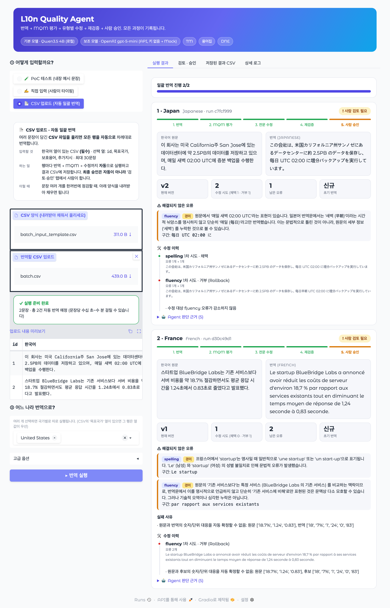
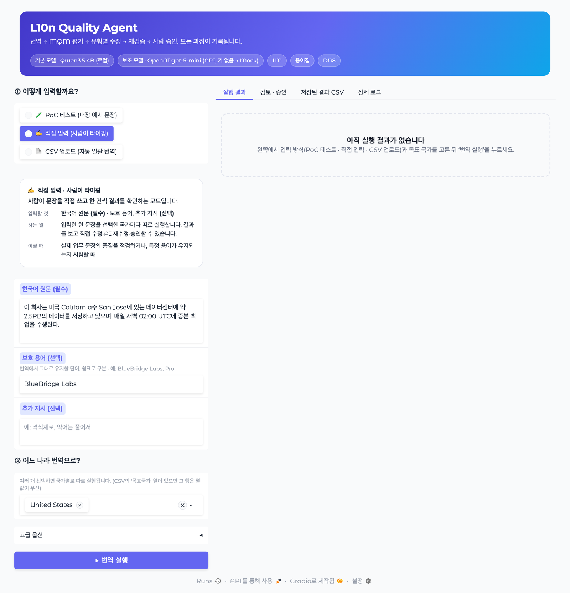
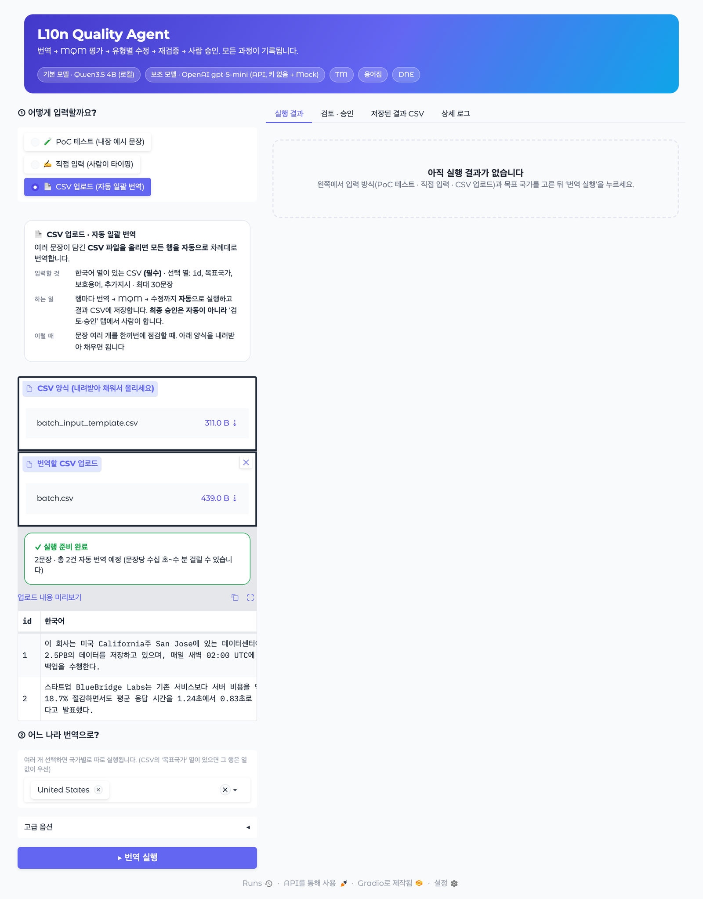
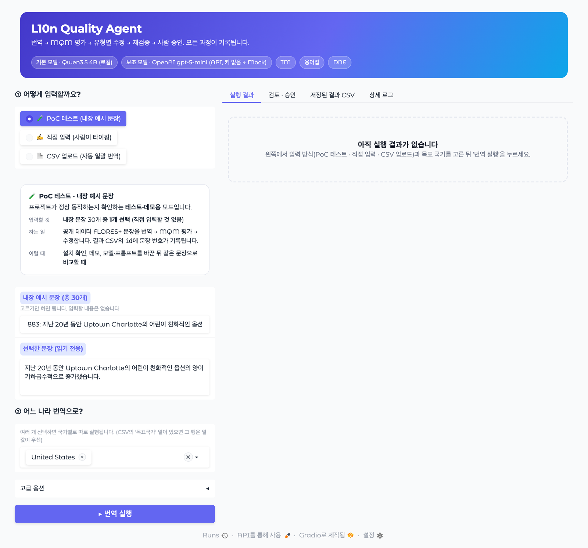

L10n Quality Agent:
자동 처리가 중단된 단계와 사람의 검토가 필요한 이유를 알려줍니다
Agent 개발 · HITL 설계
“번역은 Agent가 돕고, 판단이 필요한 지점은 이유와 함께 사람에게 넘깁니다.”
내가 고른 언어로 번역하고, 문법·유창성 등 6개 전문 도구를 Agent가 골라 고칩니다. 그리고 어느 단계의 어떤 오류에서 막혔는지, 왜 사람이 봐야 하는지를 기록과 함께 보여줍니다.




여러 언어로 번역하면, 어느 번역을 사람이 봐야 할까요?
한국어 문장을 여러 언어로 번역하면 결과가 금세 늘어납니다. 모든 번역을 사람이 검토하기에는 부담이 크고, AI에만 맡기기도 어렵습니다. 사람이 검토해야 할 번역을 선별하고 그 이유를 함께 제시해야 했습니다.
번역문만 봐서는 어디가 문제인지, 사람이 봐야 하는지 알 수 없습니다
- 어디가 문제인지 알 수 없다
- 누가 판단해야 하는지 모른다
어디가 문제인지 알 수 없다
번역 결과만 받으면 어느 부분이, 어떤 종류의 오류인지(정확성인지 문체인지) 알 수 없습니다. 모델에 수정만 요청하면 문제가 없는 부분까지 변경될 수 있고, 수정 근거도 기록되지 않을 수 있습니다.
누가 판단해야 하는지 모른다
전부 자동으로 통과시키면 위험하고, 전부 사람이 보면 비용이 큽니다. 자동 처리할 수 있는 작업과 사람의 검토가 필요한 작업을 구분하고, 그 판단 근거를 제시해야 합니다.
고른 언어로 번역하고,오류 종류마다 알맞은 도구로 고치며,어디서 막혔는지 짚어사람이 봐야 하는 이유를 알려주려면어떻게 해야 할까?
이를 위해 전문 도구를 선택하는 Agent와 사람 검토로 전환하는 조건을 구현했습니다
Agent(Planner)는 다음에 쓸 도구만 고르고, 후보를 채택할지는 Python 검사와 MQM 재평가가 정합니다. 처리가 중단되면 해당 단계와 중단 사유를 RunRecord에 기록해 사람에게 보여줍니다.
검토: 남은 오류와 변경점(diff)
CSV: 여러 문장 × 여러 국가세 가지를 만들었습니다
- 고른 언어로 번역
- Agent가 고르는 전문 도구
- 사람에게 넘기는 신호
고른 언어로 번역
목표 국가를 고르면 언어가 함께 정해집니다(미국·일본·이탈리아·프랑스·독일). CSV에서는 한 행에 Japan|Italy처럼 여러 국가를 넣어 문장마다 언어별로 따로 실행합니다. TM·용어집·DNE와 보호 용어가 번역 프롬프트와 검증에 들어갑니다.
Agent가 고르는 전문 도구
MQM 평가가 오류의 영역·심각도·위치를 알려주면, Agent가 그 가운데 다음에 쓸 전문 도구 하나를 고릅니다. 도구는 각자 한 영역만 고치도록 제한됩니다: accuracy, terminology, spelling, grammar, style, fluency. 고른 이유도 함께 기록합니다.
사람에게 넘기는 신호
수정 후보는 Python 검사와 MQM 재평가를 모두 통과해야 채택되며, 그렇지 않으면 Rollback합니다. 안전 검증 실패, Critical 오류, 반복 실패, Agent의 human_review 선택 등 7가지 조건에 해당하면 자동 처리를 중단하고, 중단 단계와 사유를 기록해 사람 검토로 전환합니다.
자동 처리가 어디서 멈추는지, 이유와 함께 알려줍니다
번역 실행 중 각 조건을 검사하며, 해당하는 조건에 따라 자동 처리를 중단하고 사람 검토로 전환합니다. 멈춘 지점에 따라 사람이 봐야 할 내용이 달라지므로, 번호를 눌러 누가 판단하고, 무엇을 사람에게 보여주는지 확인해 보세요.
자동 검사 통과
AWAITING_HUMAN_APPROVAL. 이 경우에도 자동 승인하지 않습니다.결정적 검사에서 막힘
validation.py)HUMAN_REVIEW_REQUIRED로 보냅니다. Agent-first 경로에서는 Agent가 MQM으로 원인을 한 번 더 조사합니다.심각한 오류는 자동 수정 안 함
critical_count)같은 도구가 두 번 실패
MAX_ATTEMPTS_PER_CATEGORY=2)시도 총량 상한
MAX_TOTAL_ATTEMPTS=12)Agent가 사람 몫이라고 판단
human_review를 선택하거나 최대 2개의 전략을 시도한 후에도 오류가 남으면 사람 검토로 전환합니다. 고른 전략과 그 이유가 agent_decisions에 문장으로 남습니다.에스컬레이션 후에도 남음
gpt-5-mini실행 자체가 실패
except)failure_reasons에 적어 사람 검토로 돌립니다.Figure 1. 코드 상수와 실제 실행 기록에서 정리한 사람 개입 지점 7가지와 정상 통과.
Agent는 고르고, 코드가 정합니다
agent.py의 Planner는 다음에 사용할 도구 한 개와 선택 이유만 반환합니다. Tool-calling Agent가 아닌 Planner Chain으로 구현했습니다. 후보 번역을 채택할지는 validation.py와 MQM 재평가가 정하고, 모델과 통신하는 곳은 chains.py뿐입니다. 이 구조를 통해 실행 단계와 처리 중단 사유를 구조화된 필드에 기록할 수 있습니다.

Figure 2. 모델 호출은 LangChain 체인(LCEL), 실행 순서·채택 여부·검증은 Python 코드.
실행마다 남는 기록: 어디서, 왜 막혔는가
versions · attempts
채택된 번역 버전과, 채택·거부를 모두 포함한 시도 이력. 도구별로 수정 전후 MQM 결과와 거부 사유가 들어 있습니다.
agent_decisions
Agent가 고른 전략과 이유, 호출하지 않고 건너뛴 도구까지 문장으로 남깁니다. 사람이 Agent의 판단을 되짚어 볼 수 있습니다.
unresolved_errors · failure_reasons
끝내 남은 MQM 오류(영역·심각도·위치)와, 안전 검증·상한·예외 같은 멈춘 사유. 사람이 가장 먼저 읽는 부분입니다.
7가지 실행 상태
EVALUATING → REVISING → HUMAN_REVIEW_REQUIRED 또는 AWAITING_HUMAN_APPROVAL → APPROVED / REJECTED. HUMAN_REVIEW_REQUIRED는 종단이 아니라 사람이 새 run을 분기하라는 신호입니다.
실제 실행 기록으로 보는 ‘어디서, 왜 막혔나’
저장된 실행 기록(runs/*.json)에서 고른 사례입니다. 번역 품질 점수를 비교하기보다, Agent의 실행 단계별 처리 결과와 사람에게 전달된 검토 항목을 살펴봅니다.
지명 표기는 고치고, 뉘앙스는 사람에게
한국어 원문의 지명 ‘San Jose’가 일본어로 ‘サンホセ’로 번역됐습니다. spelling 도구가 이를 고쳤고, 남은 fluency 오류는 도구가 해결하지 못해 사람의 검토 대상으로 남았습니다.
- 자동초기 번역 (v1)
この会社は、米国カリフォルニア州サンホセにあるデータセンターに約 2.5PB のデータを保存し…
- AgentMQM 평가 → Agent가 spelling 도구 선택
spelling · minor — ‘サンホセ’는 일본어 표기 ‘サンノゼ’와 다르다는 지적. Agent(전략 1/2)는 지역명 표기 오류라 먼저 고쳐야 한다고 판단하고 spelling 도구를 호출했습니다.
- 자동후보 채택 → v2
サンホセ → サンノゼ. 재평가에서 spelling 오류가 사라져 채택했습니다.
- Rollbackfluency 도구 후보 거부 → Rollback
남은 오류 fluency · minor(‘매일 새벽’ 뉘앙스 누락)에 Agent(전략 2/2)가 fluency 도구를 호출했지만 “fluency 오류가 감소하지 않음”으로 거부되어 v2를 유지했습니다.
- 사람사람 검토 필요
남은 오류: fluency · minor. ‘새벽’을 번역에 넣을지는 문체 판단이라, 시도 이력과 거부 사유가 함께 남은 채 사람에게 넘어갑니다.
번역은 맞아 보여도, 숫자 표기를 확정하지 못해 사람에게
프랑스어 ‘2,5 PB’를 결정적 검사가 원문 ‘2.5PB’와 같은 값으로 확정하지 못했습니다. 코드가 먼저 멈추고, Agent는 원인을 조사했습니다.
- 자동초기 번역 (v1)
Cette entreprise stocke environ 2,5 PB de données dans son centre de données situé à San Jose en Californie (États-Unis)…
- 결정적 검사결정적 검사: 숫자 대응 확정 불가
원문
['2.5','02','00']↔ 번역['2','5','02','00']. 소수점 쉼표(2,5)를 같은 값으로 확정하지 못해 이 건을 사람 검토 대상으로 표시했습니다. - AgentAgent가 원인 조사 (MQM 재평가)
MQM이 아직 돌지 않은 상태라 Agent가 직접 평가를 실행해 accuracy · minor 1건(California ‘주’ 단위 표현이 약해짐)을 찾았습니다.
- Agent전략 1/2: fluency 선택 → 호출 안 함
해당 영역에 미해결 오류가 없어 도구를 부르지 않고 건너뛰었습니다. Planner가 실제 오류에 근거하지 않고 고른 사례로, 이 사실도 그대로 기록됩니다.
- Rollback전략 2/2: accuracy 후보 거부 → Rollback
후보가 현재 번역과 동일하고, 숫자 대응도 확정하지 못해 거부했습니다. v1을 유지합니다.
- 사람사람 검토 필요
사람이 볼 것: ① 2,5 = 2.5 표기 차이인지, ② California ‘주’를 더 살릴지. 두 이유가 같은 화면에 함께 표시됩니다.
Agent가 ‘고칠 문제가 아니다’라고 사람에게 넘김
FLORES+(공개 데이터) 문장입니다. Agent가 수정 도구를 부르지 않고, 표현의 미세한 차이라는 이유와 함께 사람 판단으로 넘겼습니다.
- 자동초기 번역 (v1)
…genuine imported models might cost more than their country of origin.
- AgentMQM 재평가
fluency · minor 1건: 원문 ‘모국’을 ‘their country of origin’으로 옮긴 부분.
- Agent전략 1/2:
human_review선택Planner는 “엄밀한 오류라기보다는 표현의 미세한 차이”라고 판단해 수정 도구를 호출하지 않았습니다.
- 사람사람 검토 필요
남은 오류 fluency · minor 1건과 Agent의 판단 근거가 남아, 사람은 해당 표현의 수용 여부와 최종 승인 여부를 결정합니다.
사람이 필요해지는 곳은 어디였나 (저장된 run 127건)
사람 검토로 넘어간 89건: 멈춘 이유HITL
한 건은 하나의 이유로 분류했습니다. 숫자·단위 28건에는 ‘2~3km’, ‘1600킬로미터 → 1,600km’처럼 오류라기보다 표기 차이로 확정하지 못한 경우가 포함됩니다.
사람에게 남은 오류: MQM 영역
사람 검토 건에 남은 미해결 오류 86개를 영역별로 센 것입니다.
도구별 수정 시도: 채택 / 전체
같은 기록에서 수정 시도 중 재평가를 통과해 채택된 비율입니다. 도구별 수정 후보의 채택 비율을 통해 어떤 영역에서 수정이 자주 거부됐는지 참고할 수 있습니다.
이 숫자를 읽는 법
개발·실험 중 쌓인 기록이라(영어 82·일본어 16·프랑스어 12·이탈리아어 9·독일어 8) 성능 지표가 아닙니다. 같은 문장을 반복 실행한 건도 포함됩니다.
이 기록에서 사람 몫으로 남는 것은 주로 fluency와 accuracy의 미세한 차이와, 숫자·단위 표기의 확정 불가였습니다. 그래서 이 영역에서 멈출 때 이유를 붙여 알려주는 것이 Agent 구조의 핵심 역할입니다.
고르고, 돌리고, 막힌 곳을 확인합니다
어느 입력 방식이든 이후 흐름(번역 → MQM 평가 → 수정 → 사람 승인)은 같습니다. 화면 속 결과는 로컬 Qwen3.5 4B로 실제 실행해 저장된 기록을 다시 불러와 캡처했고, 문장은 모두 작성자가 만든 가상의 예시입니다.
- 1. 서비스 화면
- 2. 직접 입력: 언어 고르기
- 3. CSV: 여러 문장 × 여러 국가
- 4. PoC 테스트
- 5. 실행 결과: 단계·상태·판단 근거
- 6. 검토·승인
입력 방식과 목표 국가를 고르면 번역 → MQM 평가 → 수정 → 사람 승인 단계가 진행 표시와 함께 나옵니다.
한국어 원문(필수)과 목표 국가, 보호 용어·추가 지시(선택)를 넣고 사람이 한 문장씩 점검합니다.
한국어 열이 있는 CSV(최대 30문장)를 올리면 즉시 검증하고 “몇 건이 실행될지”를 미리 보여줍니다. 한 행에 Japan|Italy처럼 쓰면 언어별로 따로 실행되고, 한 건이 실패해도 나머지는 계속됩니다.
내장 문장 30개 중 하나를 골라 바로 돌려 봅니다. 설치 확인과 데모, 모델·프롬프트 변경 전후 비교에 씁니다.
진행 단계, 상태 배지, 원문·번역 비교, 수정 이력(채택/Rollback), Agent 판단 근거를 국가별 카드로 보여줍니다. 어디서 멈췄는지가 한눈에 보입니다.
남은 MQM 오류와 실패 사유, 이전 버전과의 변경점(diff)을 보고 직접 수정 / AI 재수정 / 승인 / 거부를 선택합니다. 프랑스어 예시는 숫자·단위를 자동 확정할 수 없어 후보를 거부하고 사람에게 넘긴 의도된 동작입니다.
사람이 결정권을 갖도록
| 자동 승인 없음 | 오류가 하나도 없어도 AWAITING_HUMAN_APPROVAL에서 멈춥니다. 번역 메모리(TM) 일치도 자동 승인하지 않습니다. |
|---|---|
| Agent의 권한 제한 | Agent는 다음 도구와 이유만 고릅니다. 후보의 채택·Rollback·상태 전환은 Python 검사와 MQM 재평가가 정합니다. |
| 결정적 검사 | 보호 용어, 숫자·단위, 번역에 섞인 메타 주석은 LLM이 아니라 규칙으로 막고, 확정할 수 없으면 사람에게 넘깁니다. |
| 설명 가능성 | 수정 전후, Agent 판단 근거, 채택/거부 사유를 run_id별 JSON으로 저장하고 결과는 CSV로 누적합니다. |
| 검증 원칙 | 테스트 통과만으로 번역 품질이 입증되지는 않으며, 실험 결과도 사람 승인을 대체하지 않습니다. 증거의 범위는 VALIDATION_PROTOCOL.md에 정리했습니다. |
기타
| 현재 한계 | 소형 로컬 모델(Qwen3.5 4B) 기준이라 Agent의 판단 품질에 한계가 있습니다. Planner가 실제 오류에 근거하지 않고 도구를 고르는 경우가 있어(사례 B), 선택 가능한 도구를 남은 오류의 영역으로 제한하는 개선을 계획 중입니다. 숫자·단위 검사는 표기 차이를 오탐할 수 있습니다. |
|---|---|
| 미구현 | CSV는 순차 실행(최대 30문장)입니다. 비동기 큐·병렬·다중 사용자와 LangGraph Checkpointer, 모델별 정량 비교와 Golden Dataset 평가는 향후 과제입니다. RAG/Vector DB는 범위에서 제외했습니다. |
| 데이터 | 공개 데이터셋 FLORES+(CC BY-SA 4.0)만 사용했고, TM·용어집·DNE는 이를 바탕으로 새로 만들었습니다. 화면과 사례 속 예시 문장은 FLORES+ 문장을 제외하면 모두 가상입니다. |
| 독립성 | 개인 시간과 장비로 개발한 독립 프로젝트이며, 어떤 회사의 내부 코드·프롬프트·데이터·평가 결과도 포함하지 않습니다. 코드는 MIT 라이선스입니다. |
| Tech | Python 3.11, LangChain (LCEL), Pydantic, Ollama (Qwen3.5 4B), OpenAI gpt-5-mini |
| Tech (UI & data) | Gradio (PWA, English/한국어), pandas, pytest, FLORES+ |
| 저장소 | github.com/sihunwang-skala/l10n-quality-agent |